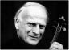

YEHUDI MENUHIN
Yehudi Menuhin (1916 yılında New York'ta Rus Yahudisi anne babadan doğdu ve 1999 yılında Berlin'de öldü.) yirminci yüzyılın en ünlü kemancılarından ve orkestra şeflerinden biriydi. Ama aynı zamanda da büyük bir hümanist ve barış insanıydı. C. Chaplin'i, J. Nehru'yu, I. Gandhi'yi, M. Dietrich'i, I. Stravinski'yi; tanıdı, bütün dünyada devlet başkanlarının ve kraliyet erkânının saygın dostu oldu. Menuhin, Louis Persinger'in, Georges Ensco'nun ve Adolf Busch'un öğrencisiydi. Harika çocuk olarak daha olgunluk çağında kendini gösterdi, müzikal rahatlığı ve keman çalışındaki derinlik, son derece dolu bir kariyer boyunca dehasının damgası oldu: Yedi yaşında New York'taki Carnegie Hall'de verdiği ilk konser, on bir yaşında ilk Avrupa konserini Paris'te verişi, on üç yaşında Berlin Filarmoni Orkestrası'yla birlikte Bruno Walter'in yönetiminde Bach, Beethoven ve Brahms çalışı. Konserden sonra Albert Einstein ona şunu söyler: "Artık gökte bir Tanrı olduğunu biliyorum." Menuhin seksen yaşında yüz on konser verir. 1962 yılında İngiltere'de Yehudi Menuhin okulunu kurar. 1965 yılında Order of the British Empire şövalyelik unvanını alır. 1970'li yıllarda Unesco'nun uluslararası müzik konseyine başkanlık eder. 1980'li yıllarda Stephane Grappelli'yle birlikte caz kayıtları yapar. 1985 yılında, Britanya yurttaşı olur ve onursal şövalye unvanı şövalyeliğe dönüşür. 1993 yılında, Baron Menuhin of stoke d'Abernon soyluluk unvanı verilir – kalıtımsal olmayan life peer unvan. 1980 yılında bütün dünyadaki yetenekli genç müzisyenleri destekleyen Yehudi Menuhin Foundation'ı kurar. Bu vakfın ödül verdikleri arasında Nigel Kennedy ve Jorge Chaminé gibi önemli isimler yer alır. Bu büyük hümanist daima yoksulların yanında olmuştur. İkinci Dünya Savaşı sırasında dünyanın her yerinde yüzlerce konser vermiş, son dönemde Kosova'da barış için konserler vermiştir. Çingenelerin ve dünyanın her yerindeki etnik azınlıkların da yanında yer almıştır. Yaşamının sonunda "Avrupa Kültürler Parlamentosu" kurdu.

MENUHIN
Yehudi Menuhin, siz Nehru dönemini, Nasır, Roosevelt, Adenauer ve De Gaulle dönemini yaşadınız. Ama aynı zamanda nasyonal sosyalizmi ve Stalinizmi de yaşadınız. Vatanseverliğin içinde milliyetçilik tehlikesi hep oldu mu? Bu kavram sizin gözünüzde bir anlam taşıyor mu?
Evet, çünkü bireyin yaşamını kaynaklandığı ulusa bağladığından, doğal olarak insani bir duyguya denk düşüyor. Bu kavram biraz yapay şekilde gelişmiş olmalıdır, çünkü egemen devletin kendisi de yapay bir yaratıdır. Azınlıkları, bir muhalefeti ve birlikte yaşaması gereken sayısız öğeyi yekpâre devletin içine dahil etmek gerekti. Dolayısıyla güven üzerinde kurulu bir sadakat biçimi kurmaya çalıştı. Bu, eşzamanlı olarak doğal ve kararlaştırılmış yollarla elde edilebilecek bir sonuçtur. Ne yazık ki bir tür vatanseverliğin, ulus fikriyle birlikte, bir sekt ya da bir din çerçevesinde kendini dayattığı itaat biçimlerinin geliştiği görüldü. Özellikle Kaliforniya'da gelişmiş olan dinsel çevrelerin durumu budur. Bu yaratılar hem otantik hem de tamamen gereksiz, yanlış ve aldatıcı olabilirler. Egemen devlet adına giderek daha az insanın hayatını feda edeceğini görmeyi umarım; bu fedayı kabul eden, arzulayan hâlâ o kadar çok insan var ki. Bu açıdan, Thatcher'ın başlattığı Malavi Savaşı kuşku duyulmayan bir vatanseverlik atılımı ortaya çıkardı. Thatcher bu vatanseverliğin varlığını sürdürdüğünü düşünüyor. Ben bu kadar emin değilim, ama genç kuşakların potansiyel bir idealizmle dolu olduklarına eminim ve gençler bizim onların yaşındaki halimizden çok daha bilgililer. Ve eğer daha iyi bir dünya, çocuklar için daha iyi, daha az kirlenmiş, daha adil, Üçüncü Dünya'ya karşı daha hakkaniyetli bir dünya inşa etmeye çalışarak onları koruyacağımıza ikna edebilseydik, sanırım bu gençlerden büyük destek görürdük. Avrupa Birliği gerçek bir Avrupa bilincine doğru gelişim gösterebilmek için, bir Avrupa polisi ve ordusuyla birlikte, şu ana dek yapabildiğinden daha iyi örgütlenebilse, birçok insan bu gelişmeyi destekler. Şu an için, dar anlamda devletle sınırlı bir müdahale tarzı söz konusu. Kuşkusuz ki müdahale etmeye hazır duranlar artık vatansever ordular değil, bu orduların kalıntıları; geçit törenine ve nükleer düğmeye basmaya elverişli ordular. Buna karşılık, cephelerde ölmeye duyulan karşı konulmaz arzu, Birinci Dünya Savaşı sırasında görülen bu geniş anlamda vatanseverlik, tek bir egemen ulusun değil ama tüm Avrupa'nın vatanseverliği –bununla birlikte olan idealler bütünü gibi– artık yok. Kısacası, her açıdan ara bir evrede bulunuyoruz; çok bulanık, çok rahatsız edici, kaotik ve tehlikeli.
Günümüzde gelişen köktenci eğilimler, kimi koşullara dayanan bir anti-modernizm ve anti-Batıcılık biçimi midir?
Müstahak olduğumuz şeyi bulduk sanıyorum. Bu gelenekleri biz hazırladık, geçerli oldukları ülkeleri de; örneğin sömürgeler. Günümüzde, iki yöne giden iki eğilimle karşı karşıyayız. Federalizm ve küreselleşme. küreselleşme her açıdan zaten mevcut: Dünya çapında bir rahatsızlığımız var, dünya çapında bir bilim, dünya çapında bir iletişim var. Her şey dünya çapında. Bu gelişme içinde egemen devletler iyice geçersiz kalır. Bu devletler olabilecek en az küresel varlıklar, prestijlerini ve paralarını da giderek yitiriyorlar çünkü küresel düşünceleri yok. Ama insan varlığı bir hayvan olarak kalıyor, daha doğrusu, benim hep söylediğim gibi, dinsel bir hayvan olarak kalıyor. Dolayısıyla kendi diyalektine, kendi yerine, kendi manzarasına, alışkanlıklarına, yaşam yerlerine ve edimlerine bağlı olan varlığının bu bölümünü geliştirmeye ihtiyaç duyar.
Bu iki eğilimin mevcudiyetinde, köktencilik, yararlıyı zararlıdan ayırt etmeyi başaramayan kaotik bir küreselleşme duygusuna tepkidir. Bu kimlik yitimi karşısında kimlik sorunu ilkel ve kaba köktenciliğe dönüşür. Bir süre önce Ortodoks bir Yahudi'nin cumartesi günleri burun karıştırmaya hakkı olup olmadığını sorduğunu okudum. Sanıyorum sorunu, olumlu cevap vererek çözdüler. Bu sorun sinagogda tartışılmayı hak ediyor muydu, yoksa özel alanla mı sınırlı kalmalıydı bilmiyorum. Ama sorun ciddiydi. Müslümanlarda, sanıyorum, hırsızın elinin kesilip kesilmemesi kararına denk düşecek ciddiyette. Bunlar, çağımızla ilişkisiz köktenci tartışmalardır ve yine de bir ilişki vardır, çünkü binlerce insanı kırıp geçirmeye muktedirlerdir.
Yöneticiler, yığınları manipüle ederek onları yönlendirmeye ya da yollarından saptırmaya karar verilebilmek için bu köktenciliği kullanırlar. Bu durumun uluslararası sonuçlarını kimse dikkate almıyor. Dünya çapında bir iktidardan söz ediyorum. Tek bir ülkenin uyguladığı sömürgeciliğe geri dönülecek değil elbette, ama Birleşik Avrupa sayesinde düzen ve adalet dayatılabilir. Cezayir'de müdahale etmeliydik, hükümeti askıya almak ve Fransız, Britanya ya da Amerikan genel valileri büyük geleneğine uygun olarak bir genel valilik kurmamız gerekirdi. MacArthur bu valilerdendi. Cezayir'i yönetmek için bu çapta kişilere ihtiyacımız var, masrafı dikkate almamalı. Para, Cezayir'in ihraç etmeye devam edeceği gaz ve petrolden gelebilir. Emin bir gelir kaynağı bu. Cezayir kendi petrolünü üretsin ve bu para Avrupa Birliği'nin dayattığı bir rejimi sürdürmeye yardım etsin. Başka çıkış yok. Bu vali Müslüman da olabilir elbette: Onlar arasında bu görevi yerine getirebilecek kişiler var.
Amerikalı siyaset bilimci Samuel Huntington önemli bir deneme yayımladı, Medeniyetler Çatışması. Bu yazar, Doğu Bloku'nun, eski Sovyetler Birliği'nin ve uydularının çöküşünden sonra dünyanın çokkukuplu bir hal aldığını düşünüyor. Bu dünyada, diye yazıyor, Batılı ülkeler Çin ve İslam karşısında ömem yitirecektir. Sovyet İmparatorluğu'nun tehdidinden sonra, Batı dünyasının üzerine Çin'den ve İslam'dan gelen yeni bir tehdidin çöktüğünü görür.
Bunun akla yatkın olduğunu sanmıyorum. Katı sayısal parite düzeyinde kalırsak, dünyanın bu bölgelerinde nüfus daha kalabalıktır, bilimleri ve sanayileri belki günün birinde daha da ileri olacaktır. Medeniyetler çatışmasına gelince, bu teoride hoşa gitmeyen şey çığırtkanlık boyutu. Bir kitap satmak için saldırgan mı olmak gerekiyor? Bence buna gerek yok, medeniyetler arasındaki tezat ve çeşitlilik başka türlü sunulabilir.
İsrail'in oluşturduğu bu öfke kaynağı açısından, Amerika'nın işin içine karışmak isteyeceğinden hiç kuşku yok. Bunun İsrail'in arzusu hilafına olmasından çekinirim. Benyamin Netanyahu bunun son çözümü olduğu kanısında. Zaferin olası olduğuna inanan kişilerden o. Oysa, artık hiçbir zafer mümkün değil. Yine de buna inanmayı sürdürüyorlar ve Müslüman dünyayla bir savaşı hızlandırmak istiyorlar. Çatışma bu. Ama bu çatışma zorunlu değil. Körfez'de hazır kuvvetlerin barışı sürdürmek için orda olduklarını söyleseler duruma daha iyi hakim olurlardı. İlk biz ateş etmeyeceğiz demeliler, eğer biri barışı engellemek isterse ateş edeceğiz. Bu tutum, Saddam Hüseyin'den ve tehlikeli oyuncaklarından kurtulmak isteyen Arap dünyasının da bize desteğini sağlar. Birleşmiş Milletler'in desteğiyle müdahale edersek, bu bize Rusya'nın, Çin'in desteğini de sağlar. Bu Amerika birleşik Devletleri'ne güçlü destekler sağlar, oysa ki bu ulus dünyanın birçok bölgesinde sevilmiyor. Eğer Amerika Birleşik Devletleri İsrail'in yanında inisiyatif alırsa, İbrani devletinin komşularının nefrete dayalı tepkilerine yol açacaktır ve esasen de bu İbrani devletinin hatası yüzünden olur. Ulusal nefret dinsel ve ırksal nefretten daha kötüdür. Yahudiler bunu geçmişten biliyorlar.
Malraux'ya atfedilen ünlü sözü biliyorsunuz: "Yirmi birinci yüzyıl dinin yüzyılı olacaktır." Büyük dinler, Hristiyanlık, İslam, Hinduizm, Budizm, bu yüzyıla güçlenmiş olarak mı gelecekler? Dinlerin bu olası rönesansı bir tehdit midir yoksa iyi bir şey midir?
Bu Rönesans tehlikesi, bu dinlerin her birini farklılaştıran köktencilikte yatıyor. Buna karşılık, umut bu dinlerin damıtabilecekleri şeyde yatıyor. Günümüz dünyasıyla uyum içinde olabilmeleri önemli. Açık olalım: Tanrı'nın altı gün çalışıp yedinci gün dinlendiğine hâlâ inanmak gülünçtür. Onun hâlâ çalışıyor olduğunu düşünüyorum ve biz de onun bir parçasıyız. Hepimiz bu evrene aitiz. Hepimizde bir sonsuzluk ve ezeliyet duygusu var. Hepimizin nişanı bu. Kısa hayatlar yaşıyoruz, ama sonsuzluğun, yaratılışın bizlerde barındığını kabul edersek, yaratma arzusu ile geleceği hazırlama yönünde bize musallat olan bu ihtiyaç eğer buradan geliyorsa, o zaman hayatlarımız uzun bir sürekliliğin parçasıdır. Bu temel üzerinde kimi dinleri, en azından canlıcı dinleri uzlaştırmak belki de mümkündür. Ağaca saygı, doğanın sunduğu bütün özlere saygı, kâğıt hamuru endüstrisi üzerinde önemli bir etkide bulunmaya yeter.
Temel bir kavram olan ve çok farklı geleneklerde bulunan duygudaşlık, dinleri birleştirebilir. Farklı kozmolojilere mensup milyarlarca kişiyi birleştirecek kültürlerarası bir kimlik olabilir.
İnsan varlığının temelde saldırgan kimi enerjilerini kanalize etmek de önem taşır. Bu enerjileri sömürmek yerine, onları, belli ifade alanlarına, uzay macerası, okyanus ya da jeoloji keşfi gibi kimi maceralara doğru farklı bir şekilde yönlendirmek önem taşır. Bu enerjiler binlerce biçimde ifade bulabilir. Bireylerin doğal eğilimlerine karşı eğitilmeleri gerektiği kanısındayım, böylece kendi içlerindeki iyi insanla kötü insanı birbirinden ayırabilirler. Bu, okumayı ya da yazmayı bilmeye bağlı değildir, bilgiye ya da cehalete bağlı değildir. İki karşıt fikre aynı zamanda açılabilmeye bağlıdır. Fanatik, köktenci aynı anda tek bir fikirden beslenebilir yalnızca. Tek bir doğru yolun olduğuna, kendisininkinin doğrluğuna, bir el kesmenin ya da İran'da olduğu gibi kadınların şarkı söylemelerinin yasaklanmasının doğruluğuna inanırlar. Bu insanlar arasından kimileri daha hesapçıdır, daha canavardır ve halk üzerindeki denetimlerini uygulayabilmek için, insanları doğrudan doğruya cennete gideceklerine inandırarak ölüme yollamak için bu duygulardan yararlanırlar. En zararlıları bunlardır. İyi insanlar, "İşte buna inanıyorum," diyebilenler ve aynı zamanda başka fikirlere açık olduklarını gösterebilenlerdir. En önemlisi, bu iyi insanları kötülerden ayırt eden şey, bu kötücül yanın kendilerine de zarar verebileceğini bilmeleridir. Buna karşılık, kötücül insanlar kendilerinin iyi olduklarına inandıkları ölçüde daha canavardırlar.
Günümüzde dünyanın her yerinde, Çin'den Rusya'ya dek, Avrupa'da ve Amerika'da, materyalist bir iştah, bir tüketim açlığı hüküm sürüyor. Kültürel, dinsel, manevi bir kimliği bu ekonomik liberalleşmenin etkilerinden nasıl koruyabiliriz? Özellikle de Arjantin, Şili gibi periferi ülkelerinde ve Afrika ya da Asya gibi bölgelerde bu nasıl mümkün olur?
Bu evrimin insani bedelini şimdiden görüyoruz. İsyanlar olacak, hem de yalnızca sizin andığınız ülkelerde değil, hükümetlerin emekli maaşlarını ödeyemedikleri Almanya'da da. Endonezya Uluslararası Para Fonu'nun dayattığı yiyecek fiyatları nedeniyle isyanların eşiğindedir. Ve bu yiyecek fiyatı, ülkenin ekonomik dayanağını bulabilmek için ödemesi gereken bedelin bir bölümüdür. Yalnızca zengin bir ekonominin hayatta kalabileceği ve hayatta kalma hakkına sahip olduğu fikrinin sonuçları hesaplanabilir gibi değildir.
Ben, ekonomilerimizin çoğu sektörünün daha ziyade gönüllü ve karşılıksız hizmetlere dayanmasını tercih ederim. İşsizler karşısındaki her türlü ayrımcılığın sona erdiğini, fabrikada iş bulamayanların parmakla gösterilecek kadar az olmasını isterim. İşsizlerin de aynı muamele görmeye hakkı vardır ve parayla değil, başka destekler yardımıyla ücret almayı onlar da hak ederler; bir tür kredi kartına benzer bir şeyle sinemaya, maça gidebilirler, kimseye haksızlık yapmadıkları ve kamu yararına çalışmaları ahlaki bir sözleşmenin parçası olduğu sürece tatil yapabilmelidirler, boş vakit hakları olmalıdır. Avrupa'da, on iki milyon işsiz insan parasız bir yaşamı tercih edebilir, hayal kurmayı, dans etmeyi isteyebilir ve bu hak onlara, komşusuna hiç haksızlık etmemesi ve toplumsal refaha katkıda bulunması gibi iki koşulla verilebilir.
Örneğin, temizlemek için para bulunamadığından belediye havuzlarının kapatılmak zorunda kalındığını öğrendim. On iki milyon işsiz varken bunun bir anlamı yok. İnsanların hangi sektörde çalışacaklarını seçme hakları olsaydı, finansa, inşaata, ticarete girmeyi reddetme ve kâr elde etmeye çalışılmayan faaliyet alanları seçmeye hakları olsaydı, bu tercih onları küçültmeseydi, on iki milyon işsizimiz olmazdı.
Bu yoksulluk kavrayışı her zaman temel oldu. Velasquez'in resimlerine bakarken şunu söyleyebiliriz: "Şu dilenciye bakın: Toz toprak içinde yatan biri de büyük biri olabilir." Maddi zenginlik olmadan, yoksulluk içinde büyüklük fikri belli bir Akdeniz geleneğinin tipik özelliğidir. Octavio Paz'ın Yalnızlık Labirenti'nde ya da Carlos D. de Andrade ve Jorge Luis Borges'te olduğu gibi, "sahip olmak" için değil, "olmak" için var olmak. Bu anlayış Kalvinci dünyada geçerli değildir. Amerika'da bir insan toz toprak içinde de büyük olamaz. Yoksulluk ve haysiyet New York'ta, Afrika'da, Latin Amerika'da ya da Hint'te olunduğuna bağlı olarak farklılaşır mı?
Farklılık büyüktür. Hint'te, kıt kanaat beslenecek şeylerin bulunduğu bir köyde yoksulluk, haysiyetle, şenliklerle, eğlenceyle, düzgün bir şekilde ve büyük bir özgüllük duyusuyla büyüyen çocuklarla uyum içindedir. Buna karşılık, Kalküta ya da Bombay gibi büyük şehirlerin etrafındaki gecekonduların yoksulluğu alçaltıcıdır, çünkü paraya bağlıdır. Burada yoksulların toprağı yoktur, onları destekleyecek hiçbir gelenek yoktur ve zenginlik ekonomisine bütünüyle bağlıdırlar. Akdeniz'in etrafından yoksulluk, hamuru, yağı, şarabı, portakalları paylaşmanın engeli değildir. Şu an bütün buralar kimyasal olarak hile katılmış kötü beslenmenin istilası altındadır.
Materyalizm bir tehlike olabilir. Para, insan ilişkilerini, dayanışması duyusu da dahil olmak üzere tehlikeye atar mı?
Parasızlık insanları kıskanç kılıyor, çünkü paranın arzularını doyuracağını sanıyorlar. Para gerçekten de kimi güçlükleri çözmeyi sağlar. Ama sonuçta, para bahtsızlığı ortadan kaldırmaz. Parası olan ama tatminsiz kalmış insanlar arasında intihar çok daha yaygın. Para yaşamın gerçek değerlerini satın alamaz. Bu değerler ancak bağış ve mübadele dolayısıyla edinilebilir. Pedagojik bir inisiyatif ve hizmet mübadelesi çerçevesinde, sokakta bir grup çocukla meşgul olan birini görmeyi hayal etmek istiyorum. Ama şu an için, sokakta her önünüze çıkan kişi sizi soymaya yatkın potansiyel bir düşman olarak kabul ediliyor. İnsanlar ıstırap içinde yetiştiriliyor, kıskançlık, kin ve nefret ıstırabı içinde. Bu duyguların uzağında büyümüş olduğum için kendimi çok mutlu hissediyorum.
Müzisyen olarak, sanatçı olarak, sizce yaşamın anlamı nerededir?
Yaşamın anlamı zevktedir. Benim zevkim bir eseri analiz etmekte ve onu ne şekilde işitmenin hoşuma gideceğini hayal etmekten ibaret. Yaşamın anlamı en ezici ihtiyaçlarımızın sanata dönüşmesinde yatmaktadır, bu yaşama sanatı da olabilir, beslenme sanatı da. Başka deyişle, her şey yavaş yavaş rafineleştirilen kaba bir malzemeyle başlar. Anlam buradadır. Aynı zamanda öğrenmede, anlamada, vermekte ve sürekli daha fazla yardım etmektedir de. Yoksa, yaşamın nihai ve mutlak anlamını elimizden kaçırırız. Ölümden sonra olup biteni asla kesin olarak bilemeyiz. Tek bildiğimiz şey, eğer doğmuşsak ölecek olduğumuzdur. Ezeli yaşam bütün geleceği engelliyor.
Filozof René Girard'ın düşündüğü gibi, yaşama bütün anlamını ve yoğunluğunu veren şey ölüm müdür?
Gerçekten de doğru, kesinlikle. Ama sanıyorum ki günümüzde canlı varlıkların sorunu, böyle düşünmüyor olmaları. Bu noktada, her istediklerine sahipler ve anlık ödüllendirme peşindeler. Ben zevkten söz ettiğimde, bu aynı zamanda, elindekiyle yetinmek anlamına da geliyor. İnsan sağlıklı bir çevrede yaşıyorsa, çevremizdeki ağaçlar sağlıklıysa, soluduğumuz hava temizse, yediğimiz yemek iyiyse, sokaklarımız güzelse, o halde bununla yetinebilmeliyiz.
Sanatın, müziğin kutsallığına, keza insanın bilgeliğine bağlı biri olarak sizin için tarihte işleyen güçler, insan evriminin güçleri hangileridir?
Şu an için bunlar ekonomik güçlere indirgenmiştir, bunlar da ne yazık ki denetim, otorite, tahakküm, askeri güç ve bir tür konvansiyonel bilgelik biçimiyle atbaşı gidiyor. Bu tür bilgeliğe göre kapitalizm, demokrasi, özgürlük ve zevk aynı değerler sepetinin parçası. İçlerinden birini elde edebilirsek, diğerleri de peşinden gelir. Bu yanlış bir kanı elbette.
Varlığımızı ve yaşamımızı gerçekten oluşturan şeyi kavrayışımızı genişletmemiz ve yaygınlaştırmamız gerekiyor. Örneğin, bütün refahımızın ve manevra marjımızın yüzde iki ya da üçlük bir büyüme oranına bağlı olduğunu düşünmek istemiyorum. Eğer bu rakam sıfırın altına düşerse, bunun anlamı, otomatik olarak, birbirimizi öldürmeye hazır barbarlar olduğumuz mudur? Gerçekte, bütün uğraşımız tek bir şeye bağlıdır: Sabahleyin biraz umutla uyanabilmek. Bu umut hem toplumdan hem de kendi içimizden kaynaklanmalıdır. Her günümüzü küçük bir ilerleme gerçekleştirmiş olma duygusuyla tamamlamaya ihtiyacımız var. Oysa bu kişiye ve çevresine bağlıdır. Yoksa, bu ilerleme ve umut, ötekine korkunç bir durumda yaşamayı dayatır.
On dokuzuncu yüzyıldan kaynaklanan, Anglosakson ve Amerikan uygarlığında önemli bir rol oynayan Sosyal Darwincilik kavramı, Spencer ile Fiske'nin fikirleri, en yetenekli olanların hayatta kalma fikirleri sizce bir anlam taşıyor mu, yoksa tehlikeli midir?
Darwin'in dünyasında en yetenekli olan, bir çevreye uyum sağlayarak bu çevrenin içinde hayatta kalabilirdi. Günümüzde, verili çevre yapaydır ve dolayısıyla en yetenekli olan aynı zamanda en kurnaz olandır. Amerika'da ya da başka yerde, en yetenekli olan aynı zamanda en namussuz ve en yozlaşmış olandır. Genetik planda, onun soyundan gelenin bu olağanüstü meziyetleri kalıtsal olarak taşıyacağını kanıtlamak güçtür. Tam tersine, soyundan gelecek bu kişi belki de eğitimli biri olacaktır ve eğer imkân sunulursa çok farklı olacaktır. Geçmiş, bu türden evrimlerle dolup taşıyor. Aristokrasi bunun örneğidir. Hayali hanımları savunan zırhlı şövalyelerin belli bir zarafeti vardır. Bu insanlar, zarafet ve güzellik adına kendini kurban etmeye hazırdılar. Ama günümüzde bize sunulan tek örnek, silah ve uyuşturucu kaçakçılarıdır!
Dante'nin İlahi Komedya'sından bu yana, bir anlam olmadan ve kozmolojik bir düzen ve tarihsel gelenekler olmadan insan yaşayamaz, hayatta da kalamaz. Sizin için geleneğin anlamı nedir?
Ben geleneği severim, eğer kimseye zarar vermeden ve gelişmeyi de gözardı etmeden ayakta kalabilmişse. Bu açıdan ben anayasal monarşiye bağlı bir gelenekçiyim. Siklon gözü yerine geçer ve kimse ona kötü davranmak istemez. Hakkında kötü laf edilemeyecek biri olmak harikuladedir. Çelebice davranışın başlangıcıdır bu ve apolitiktir. Anayasal monarşi ülkenin en yüksek şahsiyetinin bir başkan gibi devrilemez olduğu anlamına gelir. Bu açıdan Başkan Clinton'ın durumu gülünçtü. Amerika Birleşik Devletleri'nin dış politikası bu adamın kişisel tutumundan etkilenmiş miydi? Sanmıyorum. İki faklı alan söz konusudur ve bunları birbirine karıştırmamak gerekir. Bununla birlikte, eğer bir adam savaş başlatma yetkisine sahipse, belli denetimlere tabi kılınmalıdır.
1939-1945 döneminde dünyanın her yerinde verdiğiniz konserlerinizle son derece barış yanlısı bir tutum içindeydiniz. Haklı savaş fikrini savunabilir miyiz?
Gerçekten de haklı savaş örnekleri vardır. Son derece yüksek güçlerle bir ülkeyi işgal etmek çok önemli olabilir. İkinci Dünya Savaşı bu savaşlardan olabilirdi. Almanya'ya karşı savaş, Almanya ile Rusya arasındaki savaş eğer Çingenelerin, Yahudilerin, Slavların korunmasını hedeflemiş olsaydı, gangsterlere karşı adaleti savunsaydı böyle olabilirdi. Dünya çapındaki bu çatışmada savunulan ilkeler bunlar olsaydı, haklı bir savaşın başlamasına yol açabilirlerdi. Ama o zaman bu haklı savaş on yıl önce cereyan etmiş olurdu ve dünya da bir dünya savaşından kaçınmış olurdu. Gerçekte, Amerika savaşa Japonya ve Rusya tarafından itildi çünkü işgal edildi. Almanya'ya tek karşı çıkan ülkeler, Polonya'yla yapmış oldukları anlaşma gereği Fransa ve İngiltere oldu. İngiltere dünyayı tek başına savundu, hem de hiçbir başarı güvencesi olmadan. Ama sonuçta, bu savaşın haklı gösterilmesi ne yazık ki geçerli hiçbir insani içgüdüye eşlik etmedi.
Amerikalıların Normandiya çıkartması bu kategoriye bile girmiyor mu?
Savaş terimleriyle bu doğru bir operasyondu, ama niyet açısından değil. Niyet, azınlıkları ya da geniş anlamda insanları korumak değildi.
Yüzyıllar boyunca insanlık tarihi ideal politika ile Realpolitik arasındaki bir diyalektikten, Erasmus ile Machiavelli'den ibaret kaldı. Denge nerededir?
Nispeten yakın bir döneme kadar, bence, bu sorunun açık seçik bir cevabı olabilirdi. Savaşa ve soykırıma yöneltmiş olan politika her zaman tamamen meşru görülmüştü, hatta Yunan ve Roma gibi geçmişin uygar milletlerinde bile. Bununla birlikte, bir kültüre karşı nefret, şehirlerin, insanların yıkımı asla tamamlanamaz, bir kültür ne olursa olsun iz bırakır.
Günümüzde sizin sözünü ettiğiniz ideal politika, güzel yönelimler edinen, koruyan, insanlığın hiç durmadan daha ezici bir hal alan dünya çapındaki meydan okumalarına karşı koymayı sağlayan bir politika olmalıdır. Her düzeyde, bu politika bireylerin katkılarını almalıdır; yalnızca onların kişisel çıkarlarını değil, yalnızca onların oy pusulalarını değil, yalnızca bölgesel ya da ulusal ölçekte değil, giderek genişleyen art arda ortaya çıkan özekdeş çemberler içinde bunu yapmalıdır, ki bu çemberlerin en büyüğü dindir (daha tanımlı bir terim yok çünkü) ve en küçüğü ise yeni doğmuş bebekle birlikte başlar. Politik eylem öncelikle özel bir toplumu koruma iddiasındaydı, sonra genel oyun yaygınlaşması ölçüsünde daha geniş destekler gördü. Oysa, politik eylemin bu çemberlerinin ötesinde, başka çemberler de vardır. Ne yazık ki, özel toplumların temsilcisi olan politikacılar bu genişlemiş çemberlerin bilincinde değiller.
Günümüzde gezegen, iklimi, enerjisi, suyu, uzamı, denizleriyle ekolojik olarak büyük tehdit altında. Gerçekçi bir ekolojist politika olabilir mi?
Yeterli kültürel temsillerin yokluğunda bile, yeşil partilerimiz var. Bunlar seçmenler tarafından ifade edilmedikçe politikacıların kendi inisiyatifleriyle asla desteklemedikleri popüler bir duyguyu savunuyorlar. Halkın geniş bir bölümünün bu yeşil partileri desteklemesi, bu partilerin politika üzerinde artık bir etkilerinin olduğu anlamına gelir.
Buna karşılık, saf ekolojik planda, bunun daha öteye gidebileceğini düşünüyorum. Hükümetin, çıkar gruplarının ellerinde olduğu ölçüde, çoğunluk iradesine aykırı davranacağı kanısındayım. Amerika Birleşik Devletleri'nde Gallup yoklamaları, ekolojik kalkınmaya ve bunun gerektirdiği yükümlülüklere dair halkın anlayışının çok daha yüksek olduğunu ortaya koymaktadır ve bu anlayış ormanların ve mülk sahiplerinin savunulmasının ötesine gitmektedir.
Kısacası, bizler temsili bir demokrasi içinde değil, temsili bir sınıf ve tüccar sistemi içinde yaşıyoruz.
Machiavelli'ye göre politikada kimi zaman ahlakdışı eylemlere mecbur oluruz. Siz ne düşünüyorsunuz?
Bu yalnızca politikada doğru olmakla kalmıyor. "Asla çalmayacaksın!" on emirden biridir. Oysa, kısa süre önce bir Fransız annenin bir süpermarketten yiyecek çaldıktan sonra beraat ettirildiğini, çünkü yargıçların aşırı zorunluluk durumunda yiyecek çalmaya izin veren bir on sekizinci yüzyıl yasası keşfettiklerini okuyunca hayran kaldım. Başka deyişle, bu buyrukları hangi noktaya kadar mutlak olarak görmeliyiz ki? Mülk sahipleri için, bunlar mutlak değerdedir. Hiçbir şeyleri olmayanlar için bu mutlaklık biraz daha azdır. "Öldürmeyeceksin!" için de durum aynıdır. Ötekini öldürmek ne zaman doğrulandı ki? Gerçekten de öldürmek doğru olabilir kimi zaman.
Sanatçı olarak yaşamınızda ama aynı zamanda kamusal ve politik yaşamda da her zaman büyük bir hümanist oldunuz. Diktatörler tanıdınız. Thomas Hobbes ya da Sören Kierkegaard anlamında sizi bunca meşgul etmiş olan kötülüğün tarihteki kökleri nelerdir?
Asıl kötülük en kaba ve en acımasız önyargıların ve bunların kendi kendini doğrulamasının sonucudur. Kendi iktidarını, rahatını, güvenliğini sağlamlaştırmak için ve insanın kötülüğün peşinden gitme kapasitesini kullanmak için bu kötülüğe başvurulur. Tekrar ediyorum, iyi insan kötülük işlediğinin bilincindedir. Bu temel bir yandır. Tersine, kötü insan bütün bunlara kördür ve yalnızca ileri gitmek ve hayatta kalmak için kötülük işler. Sportif rekabet dünyasında, galiplerin en iyi oldukları kanıtlanabilir ve mağluplar genellikle yenilgilerini zarafetle kabul ederler. Ama hayatta kalma rekabetinde, hayat memat meselesidir bu ve on kişiye yetmeyecek yiyecek varsa, onda birin elinde kalır ve diğer dokuzu bunu beceremez.
Homeros'un Odyssea'sından Gılgamış Destanı'na ya da Vasco de Gama'ya dek insan kendi yazgısını sorguladı. İnsanlık tarihinin, teleolojik olarak konuşursak, bir anlamı var mıdır?
Birçok açıdan bence insan evrimi çeşitli yönler izledi. İnsan bilgisi ve kavrayışı, psikoloji, jeoloji ve tarih alanlarındaki durum budur. Bilgi görünüşte bağlantısız öğeleri birleştirmekten ve karşılıklı olarak birbirlerini ne şekilde etkilediklerini gözlemlemekten ibarettir. Dolayısıyla sürekli büyüyen bir bilgi toplamına sahibiz, bizi, dokunduğumuz her şeyi, her düşündüğümüzü ve hayal ettiğimizi de kapsar.
Dolayısıyla bilgilerin artışına doğru ilerlemekteyiz. Fiziksel terimlerle, eğer bütün öğeler birbirlerini beslerse bir yaşam döngüsü gelişebilir. 1953'te Hindistan'a vardığımızda yaşadığım ilk günleri, ilk saatleri hatırlıyorum. Indira arabayla bizi almaya havaalanına gelmişti. Sokaklarda arabalar çok sayıdaydı: her yerde inekler görülüyordu, kutsal inek statülerinden aldıkları güven ve saygınlıkla yürüyorlar, gübrelerini ve sütlerini bağışlıyorlardı ve bu kutsal inek tezeği dolu sepetler taşıyan muhteşem kadınlar görüyorduk. Bu madde temel önemdeydi, çünkü alınan bir şeye karşılık verilen hammaddeydi. Her şeyi içeriyordu; hem gübre, hem ısı, hem de inşaat malzemesiydi. Ağaçlar ise ineklerin sırtındaki böceklerle beslenen maymun ve kuşlarla doluydu. Sonuçta, erkekler de vardı. Ve bütün bunların tam bir döngü oluşturduğu anlaşılıyordu. Bu döngüyü parçalamamaya özen gösterildiğinde, ağaçlar maymunlara ve kuşlara dayanak oluşturuyordu, onlar da ineklerin böcekleri sayesinde yaşıyorlardı ve insanlar da bu süt ve tezek sayesinde. Kibirli, zarif, muhteşem giyinmiş, olağanüstü bir havada yürüyorlardı, Beşinci Cadde'den inen birinden çok daha muhteşem.
Bu çember kısmen sonsuza dek uzanabiliyordu. Buna karşılık, bu çemberi parçalayarak, ki yapılan da bu oldu, maymunları laboratuar hayvanına dönüştürmek üzere Avrupa'ya göndermeye karar verildi, arabalar sokakları istila ettiler ve inekleri, sütlerini ve tezeklerini kovdular; bundan böyle kutsal değerlerini yitirdiler.
T. S. Eliot bu sorunu daha önce belirtti. Teknoloji, biçimi ne olursa olsun, bir evrim gücü müdür? Teknoloji iyi midir yoksa kötü bir güç müdür?
Her güç gibi iyi de olabilir kötü de. Teknolojinin ilk etkisi ister istemez bir altüst oluştur, çünkü doğal döngüleri parçalar, sonuçta yapay döngüler inşa etmek zorunda kalırız. Ve ödünlememiz gereken engelleri dikkate almamız gerekir. Okuma ve yazmada görülen engeller, bellek ve sezgi yitimidir; bazı kişiler bunları ödünlemeyi başarmıştır. Ama gerçekte, bilgisayar soyutlama kapasitesinin yitimine yol açacaktır. Her ilerleme handikaplar içerir. Bu durumu kavramayı ve bu handikapları ödünlemeyi başarırsak, çocuklarımıza başkasına karşı duyarlı olmayı, sezgi, bellek sahibi olmayı öğretirsek, o zaman okumanın ve yazmanın onlara kaybettireceği şeyi de ödünleyebiliriz. Bunu yapmak için, onlara her gün şiirler ve şarkılar öğretmek uygun olur.
Logos –teknik rasyonellik– modernitede mythos olmadan yaşayamaz. Mitoloji olmadan yaşayamayız. Günümüz toplumunda mitolojiler yeni biçimler edinmişlerdir. Roland Barthes'ın üzerinde durduğu gündelik yaşam mitolojilerinin ötesinde, yirmi birinci yüzyılın mitolojileri neler olacaktır?
Bu bir çap sorunudur. Gerçekten de mitolojilere ihtiyacımız var, çünkü bilmediğimiz şeyin bize açıklanması gerekir. Olabilecek en az eğitimli kişi bile dünyanın yaratılış tarzı üzerine, yaratılışın süresi üzerine ve bu yaratılışın yaratıcısı üzerine en azından bir kesinliğe sahip olmak ister. Bu nedenle mitolojiler hazırladık. Bu bilgiyi hiçbir maddi kanıt üzerinde temellendiremeyeceğimizden bu kanıt mitsel olmalıdır. Bu kanıt kimi zaman çok güzeldir, hayal gücü doludur ve muhteşem tablo ya da müziklere yöneltir. Bizim mitolojimiz budur, gerçeğin bir ikâmesi, birbirimizi öldürene dek dövmekten bizi kurtaracak ikâme.
Günümüz mitolojisinde kimi kahramanlar var. Öncelikle halk kahramanları ve şarkıları, caz. Sonra, farklı alanlarda kahramanlar var, sporda var, çok para kazananlar, çok insanı kandıranlar var. Günümüzde bir kaba güç mitolojisi de var, ki bu çok zararlıdır. Bu, yolları üzerindeki her türden engeli yok ederek ilerleyenlerin mitolojisidir. Engellenmenin imhası, kendi başına bir mitoloji olmuştur. Her türlü duygudaşlığı, kısıtlama biçimini aşmayı başarmış olanlardır bunlar, üstelik de bunu acımasızca yapanlar. Bunlar korkunç bir kahraman kişiliği edindiler. Çocukların kendilerine hangi oyuncakların satın alınmasını istediklerini ve minyatür arabalarına hangi adları verdiklerini görmek yeter.
Almanca bir kelime var: das Numinose. Mircea Eliade ile Rudolf Otto bunu kullanıyor. Geleneksel toplumların yaşamın anlamı için doğal ve temel gördükleri şeyi belirtiyor. Bugün sizin bu Numinose anlayışınız nedir?
Gerçek değerler için ve bunların bu Numinose'yi yansıtabilmeleri için bugün hâlâ yeterince otantik duygu olduğu kanısındayım. Ben Numinose'yi dokunulmaz diye tercüme ederdim.
Dokunulmaz, gizil tarihin gizli gücü, W. H. Auden gibi bir şairin sözünü ettiği görünmez varolanın gücü müdür?
Bu türden bir nosyon da var. Giderek artan sayıda kadın Bakire Meryem ve Çocuk gibi süt vermemeye ikna ediliyor. Şu an, bir lezbiyen bir başkasının çocuğunu yetiştirebilir. Biz bütün bu doğal kuralları parçalayarak, bizim hissetme ve harekete geçme kapasitemizi sınayan, eşi benzeri olmayan yeni durumlar yaratıyoruz. Nasıl ve niçin nosyonunu yitirdik, yolumuzu şaşırdık: Çocuklu bir anne midir, yoksa yapay olarak döllenmiş bir çocuk mudur, bilmiyoruz. Oysa ancak yaşadığımız, hissettiğimiz, bildiğimiz şeyden emin olabiliriz.
Hindistan'dan söz ettiniz. Dünyada başka bölgeler var. Afrika'da, Asya'da, Latin Amerika'da, buralarda metafizik ve tinsel deneyimlerin izini güçlü biçimde taşıyan geleneksel bir yaşam varlığını sürdürüyor; bir duyarlılık, otantiklikle birlikte bir yaratıcılık, hayal gücü, gündelik kültür yaşamı, bir sanat estetiği ama aynı zamanda bir sokak estetiği. Sanayileşme ve modernite karşısında bu hazineler yitecek midir, yoksa kimi yerlerde yaşamaya devam edecek midir?
Hindistan bu yerlerden biri olarak kalıyor, ama erozyon sabit. Öncelikle Hindistan sanayi açısından çok ileri bir ülke. British Airways bilgisayar işleme merkezini buraya yerleştirdi çünkü Hintliler İngiliz mühendislerden çok daha zeki ve daha ucuz. Hintliler her zaman bir düşünce halkıydı. Hindistan'ın büyük bilim adamı Homi Baba'nın olağanüstü hikâyesini biliyorsunuz. Amerika Birleşik Devletleri'ne vardığında Time gazetecileri ona Hindistan kadar geri bir ülkenin, bir bilim insanı olmakla yetinmeyen, tüm müziğimizi ve sanatımızı da bilen, Bayreuth'a gitmiş, bütün Hint müziğini bilen biri olan, kısacası Orta Çağ ya da Rönesans anlamında dürüst de olan onun çapında bir bilim adamını nasıl yaratabildiğini sordular. "Biliyorsunuz, Hindistan'da, çok sıcak uzun yazlarımız var ve çoğu zamanımızı büyük ağaçların gölgesinde düşünerek geçiriyoruz." Cevabı bu oldu. Bu, Hindistan'ın otomobili, uçağı ya da buzdolaplarını icat etmediğini, ama bu arada düşündüğünü belirtiyordu.
Bu ülkelerdeki bu düşünme yetisi ve özellikle empatiyle ve sezgisel bir zekâyla "hissetme" yetisi yok olmuyor mu?
Sanırım evet.
Bundan böyle, teknolojiye, sanayileşmiş ülkelerin modernitesine, onların cebirleştirmesiyle ve zamanı kronometreleştirmesiyle birlikte, gündelik yaşamın standartlaşmasıyla ve saf verimlilik arayışıyla birlikte, teslim olduklarına göre, hayal gücü ve duyarlılık nerede varlığını sürdürecek?
Sömürgeci amaçlarla dümdüz hudutlar çizme deliliğine kapıldık, çünkü diplomatlar puro içmeyi severler ve ben Afrika'nın düzenlenmesinin onların yüzlerce puro içmesine imkân tanıdığına eminim. Bu düz çizgiler ne doğal hudutlara denk düşüyordu, ne kabile hudutlarına, hiçbir şeye denk değildi. Onları kimliklerinden yoksun bıraktıktan sonra, bu halkları demokrasiye geçirmek istedik. Doğal olarak bu bir hezimet oldu ve bu halklar bugün neredeyse sürekli ve korkunç bir savaş durumundalar. Daha kurnaz birkaç kişi bizim bu ülkelere akıttığımız bütün paraya el koymayı başarıyor.
Sovyet imparatorluğunun çöküşünden sonra, kapitalizmin gücünün bu yayılması –ekonominin dar açıdan bakıldığında– işleyebildi. Buna karşılık, madalyonun öteki yüzü nedir? Asya'daki, Latin Amerika'daki geleneksel toplumların, İslam toplumlarının kimliklerini yitirmekten başka şansları yok mudur?
Kapitalist sistem aniden kendini bir heykel kaidesinin tepesinde buldu. Giderek artan sayıda insanın, hatta tüm insanlığın maddi zenginliğe erişmesi umudunu okşamayı ve her türlü kaygıdan kurtulmayı sağlayan kıyas kabul etmez bir sistem haline geldi. Amerika'nın temsil ettiği her şeyle, demokrasiyle, özgürlükle, vs. çakıştı. Bununla birlikte bu sistemin çok kısa bir ömrü olacaktır. Yıpranıyor, çok çabuk tükeniyor. Kapitalizm ve demokrasiden oluşan bu kusursuzluk yanılsaması, yeni bir toplumsal bilincin ortaya çıktığı her yerde bütün zaafını sergiliyor. İtalyan Komünist Partisi artık orak çekici dalgalandırmıyor olsa da toplumsal kısıtlanmışlık duyusunu yitirmedi. Ve ekonominin gerekleri ile insanların gerekleri arasında hiç görülmemiş bir çatışmanın ortaya çıktığını göreceğiz muhtemelen.
Hidrojen bombasının mucidi Edward Teller'le bir söyleşi sırasında, doğa bilimleri ile beşeri bilimler arasındaki bağ üzerinde düşünmeye çalıştım. Eksik olan bu bağ, modernitenin Kairos'udur. Leibniz ve Spinoza'ya dek matematik felsefeye bağlı kaldı. On dokuzuncu yüzyılda büyük üniversitelerde fizik doktorası hâlâ felsefe fakültesinde veriliyordu. Bugün durum farklıdır. Francis Bacon'ın çizgisinden giden Teller, doğa bilimleri alanında insanın elinin eriminde olan her şeyi insanın hiç kısıtlamasız gerçekleştirmesi gerektiği kanısındadır.
Özellikle de bomba gibi bazı keşiflerin kullanımının dayattığı önlemleri mi düşünmeliyim?
Teller insanlığın evrim içinde her zaman denge bulacağını düşünüyor. Ona göre, aynı zamanda "yıldız savaşları" da denen Başkan Reagan'ın "Stratejik Savunma İnisiyatifi" (IDS) örneği haklı çıktı, çünkü Sovyet imparatorluğunun düşüşünü hızlandırdı. Ona göre, ahlak sorunu burada yatmaktadır. Bu nedenle, doğa bilimlerinin etik boyutu onu pek ilgilendirmiyor. Doğa bilimlerinin bu ahlaki boyutunu siz nasıl algılıyorsunuz?
İnsan iyilik de yapabilir kötülük de. Gerçekten de doğal bir ahlaklılık vardır. Ne yazık ki sütun başlıkları halinde sınıflandırma eğilimimiz var: hoşgörü, özgürlük, vs. Bunlar çocuklara öğretilebilecek kelimeler. Ahlakı ahlak olarak, kuru ve yapay bir şekilde öğretmek bana imkânsız gibi geliyor. Buna karşılık, bu durumlardan ders çıkarmayı bilirlerse, çocukları normalde birbirlerine hoşgörülü davranacakları durumlara yerleştirebiliriz. İnsanlar birbirlerine bağımlı olduklarını okuldan itibaren anlamalıdırlar. Eğer kişi, mutfaklarda, laboratuarlarda, uçaklarda vs. çalışan binlerce başka insanın yardımı olmadan kimsenin hayatta kalamayacağını anlarsa onda doğal bir ahlak oluşabilir. Ben buna "yaşayan ahlak" diyorum.
Ayrıca yabancının ve farklı olanın kim olduğunu da öğrenmeye ihtiyacımız var. O bir zenginleşme kaynağıdır. Belli ölçülerde, biyolojik düzlemde, erkekler ve kadınlar farklıdır ve bu farklılık temel önemdedir. Ardından, canlı ağaçlar olan kültürler arasındaki farklılıklar gelir. Ama bizler bariyerler kuruyoruz. Ahlakın kaynakları bizim içimizdedir, tıpkı kötülüğün kaynakları gibi. Ahlakın kaynakları hepimizin gerçekleştirmeye çalıştığımız iştedir ve başkalarının güvenini kazanmaya çalışmamızdadır. Güvensiz yaşamak korkunç bir şeydir. Herkesten nefret içinde tek başına yaşamak da aynı ölçüde korkunç olmalıdır. Ahlakı yukarıdan verilmiş bir buyruk olarak algılamamalıyız.
Ahlak, öteden ya da başka bir kaynaktan gelen, transendantal bir bilgi aracılığıyla dayatılmayıp, ampirik bir insanlıktan yola çıkarak mı gelişmelidir?
Evet ama bu büyümeye uygun koşulları yaratmamız gerekir, tıpkı seradaki bitkiler için yapıldığı gibi. Her bitkiye uygun ısı, uygun nem gerekir. Bu durum mekanik olarak elde edilemez. Bu nedenle, kimi ülkelerin tutumunu kabul edemeyeceğimiz kanısındayım.
Bu, daha önce sözünü ettiğimiz haklı savaşı mı tanımlar?
Evet ama bu savaş tartışmasız bir otorite ve iktidar temelinde sürdürülmelidir. Bu müdahale Amerika'nın ya da Avrupa'nın olgusu olmalıdır, bütünü içinde dünyadan kaynaklanmalıdır.
Ahlak geçmişin büyük eserlerine, büyük insanlara saygıdan ve kendi yaşamlarımızda, sanatımızda ve bilgimizde, ötekine güvende bu varlıklara bağlı olduğumuzun bilincinden doğar. Benim savunduğum ve büyük bir felsefi geleneğe dosdoğru dahil olan pratik ahlakın temeli budur.